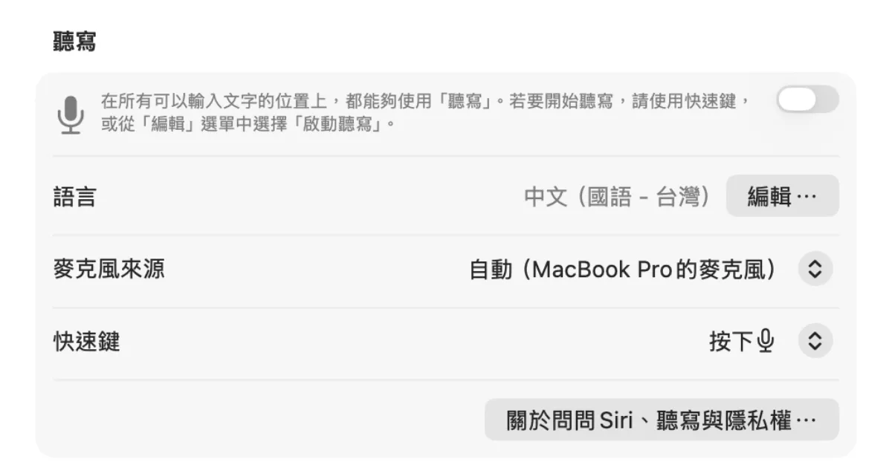
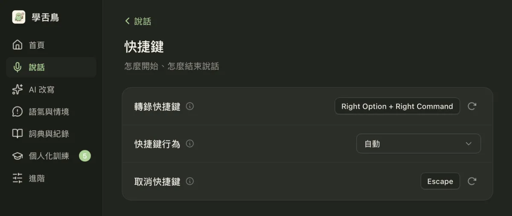
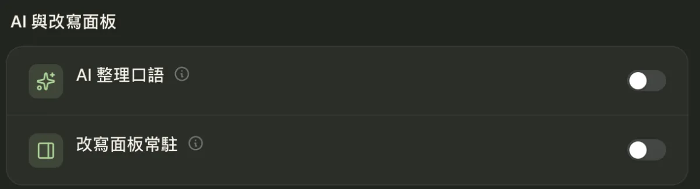
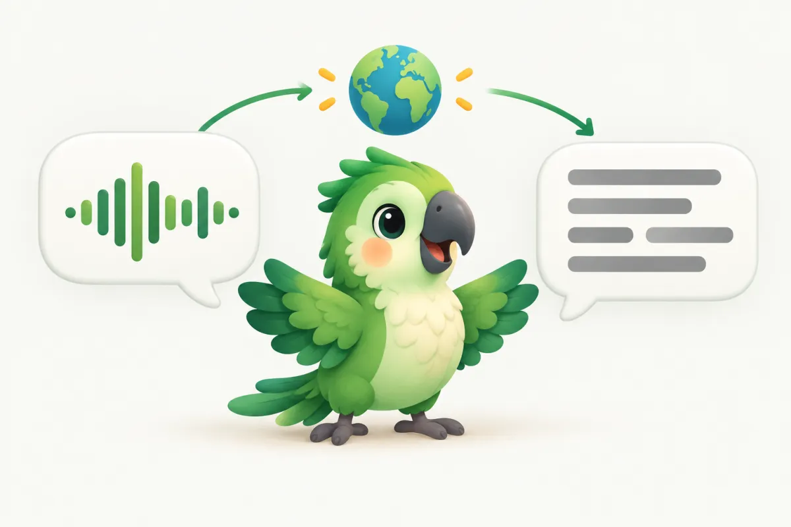
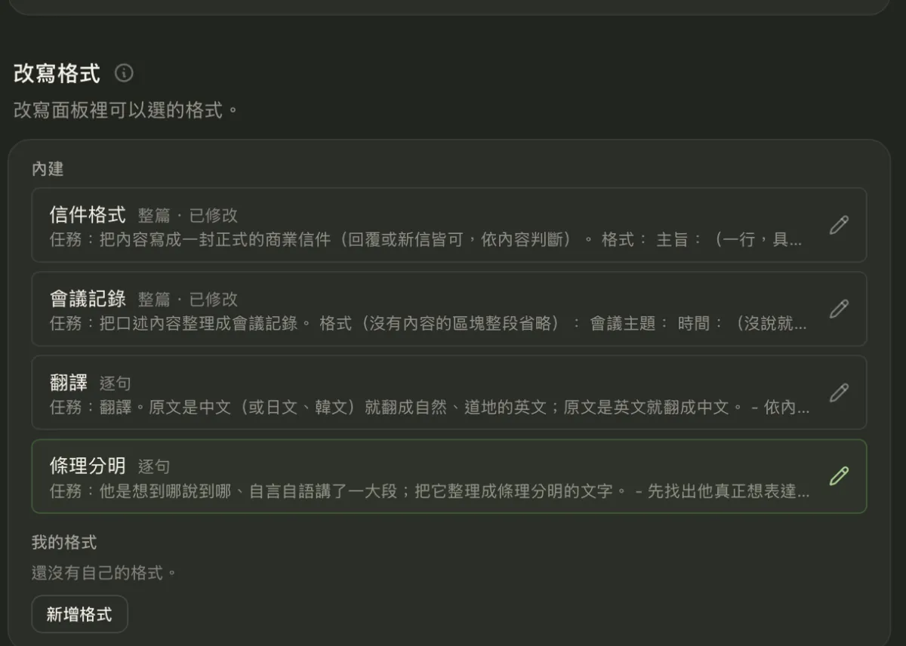
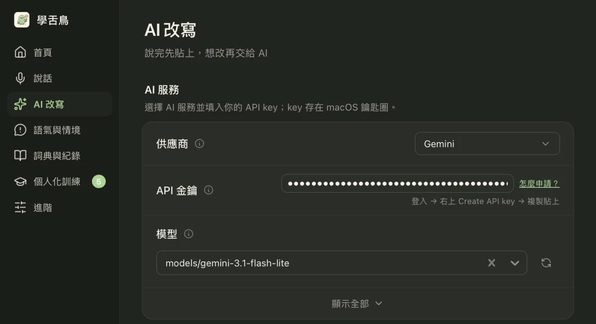
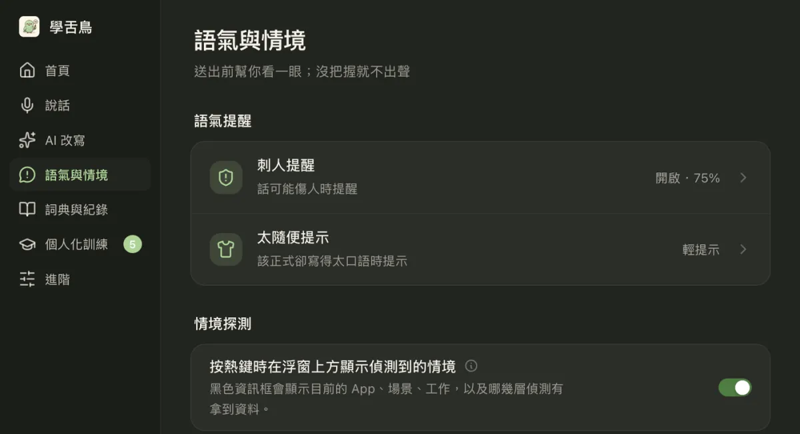
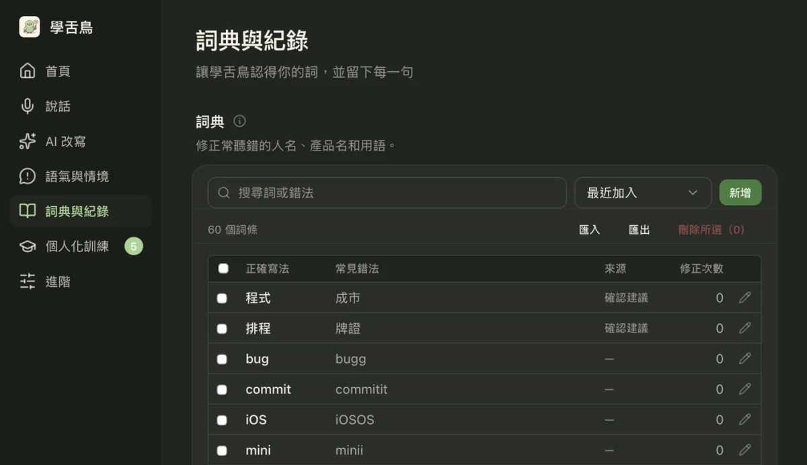
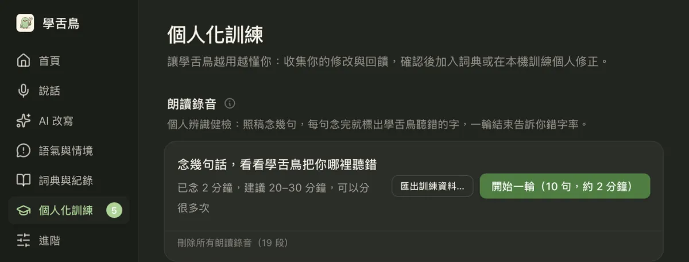
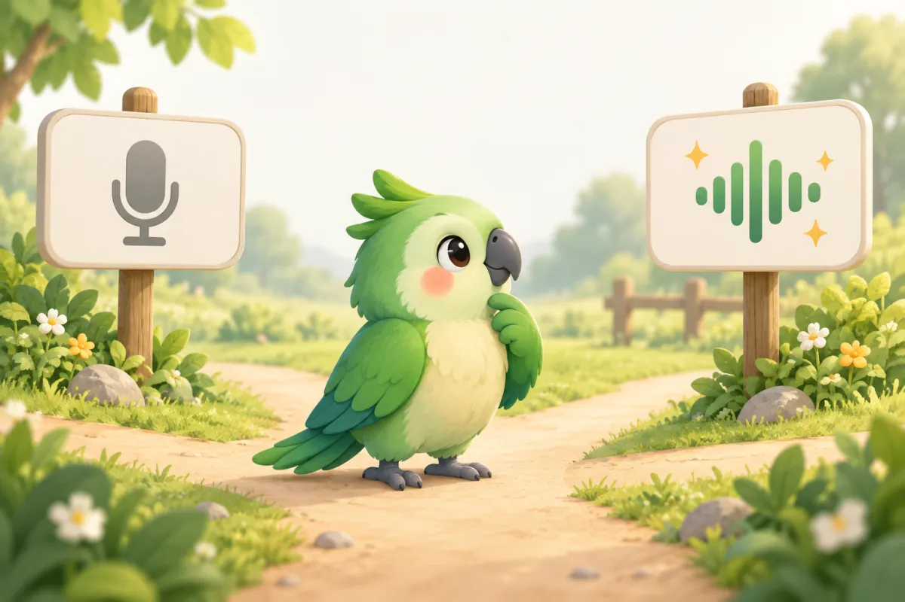

1. 先試 macOS 內建聽寫
如果只是偶爾口述短句，可以先在「系統設定」搜尋「聽寫」並按照畫面啟用，再到備忘錄或 Mail 的文字欄位使用設定好的快捷鍵。不同 macOS 版本的語言選項、快捷鍵和連線要求可能不同，請以當前裝置顯示為準。對偶爾輸入短句的人，內建功能可能就已經足夠。

2. 大量輸入：按住說話，放開貼上
如果每天要在不同 App 內回訊息，常見的麻煩是先在另一個程式轉錄，再複製回原本視窗。學舌鳥提供按住右 Option + 右 Command 說話、放開後貼到目前游標位置的工作方式，也支援持續聽寫。第一次使用需要依 macOS 提示完成必要權限；不同 App 的相容性仍應實際測試。

3. 講話有贅詞、講錯又改口？
自然說話經常出現「呃、那個」或說到一半改時間的情況。例如「明天三點開會，不對，三點半，資料今晚寄給你」，理想的整理結果是「明天三點半開會，資料今晚寄給你」。這是說明用途的示例，不是實測輸出。學舌鳥可選擇開啟 AI 口語整理，讓文字更容易閱讀；重要日期、金額和姓名仍要親自確認。

4. 直接說中文，轉成英文輸入
寫英文 Email 或與海外同事溝通時，若要先打中文、開翻譯器、複製英文、切回工作視窗，會增加操作成本。學舌鳥的「翻譯」改寫模式可以把已辨識的中文轉成英文，再由你確認並取代文字。語音辨識與 AI 翻譯是不同階段；翻譯改寫可能需要自行設定 AI 服務和 API Key。



5. 送出前檢查語氣
例如「你怎麼又沒交資料？」容易給人責備的感覺；「想確認資料進度，方便告訴我預計什麼時候完成嗎？」更有助於聚焦問題。學舌鳥提供語氣提醒與改寫建議，能調整情緒溫度及正式程度。你可以編輯建議內容，也可以選擇不採用；它不是替你判斷對錯。

6. 人名、專有名詞老是打錯？
辨識系統難免將同音人名、產品名稱或中英混合詞辨識錯誤。學舌鳥提供個人詞典、修正確認與本機個人化訓練，讓使用者逐步累積自己的詞彙習慣。個人化不等於保證零錯字，適合用常說的幾個詞來實測改善幅度。


7. 怎麼選才適合自己？
偶爾輸入：先試系統內建聽寫。大量跨 App 輸入：再比較快捷鍵與持續聽寫。經常翻譯或整理口語：評估 AI 改寫是否真正節省時間。注意學舌鳥的語音辨識與個人化訓練主要在 Mac 本機完成；選擇 AI 改寫時，文字可能傳到自行設定的外部服務。目前提供 Apple 晶片 Mac 版本，macOS 11 以上。
